| 日付 | 2009年5月23日（土） |
|---|---|
| 山域 | 丹沢 |
| メンバー | 友人（男1女1） |
| 山行形態 | 日帰り |
| アクセス | 電車、バス |
| ルート (Map) | 西丹沢自然教室→白石峠→大室山→犬越路→西丹沢自然教室 |
今週末もあまり天気が良くない。
週末のたびに天気が悪くなるパターンに入ってしまったようだ。
5月末は袈裟丸山に行きたかったのだが、この天気では仕方が無いので
代わりに大室山に行く事にする。
展望が良くない山なので、この天気でちょうど良い。
8:30 西丹沢自然教室バス停到着。標高545m。
バスは臨時便が出て計3台、バス停近辺の駐車場は満車。
ものすごい人出だ。
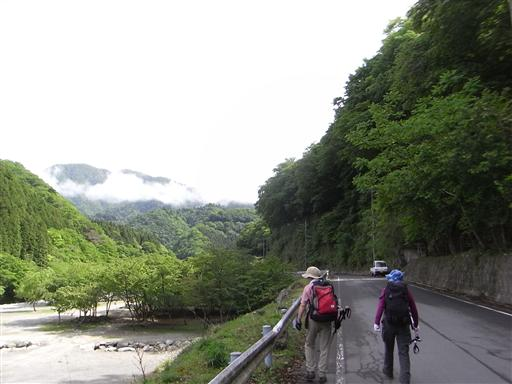
車道から沢沿いの登山道に入っていく。
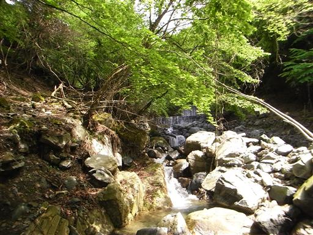
何度か沢にかかる橋を渡りながら少しずつ標高を上げていく。

バス停近辺はあれだけ賑わっていたのに、登山道には余り人が見られない。
この辺りの山といえば他には檜洞丸か畦ヶ丸くらいしかないが、
皆そちらの山に行ってるようだ。
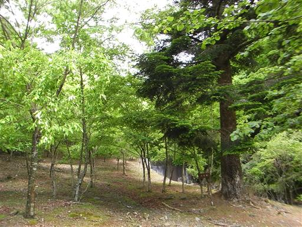
白石の滝が左手に見える。
登山道は樹木に覆われているため、滝の見学ポイントは無い。
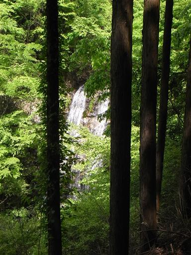
沢沿いに木道が伸びている。こんなところに木道があるのは珍しい。
普通木道は植生を守るためにあるのだが、ここは歩きやすいように設置されているのだろうか？
少々過剰な設備とも思えるが…
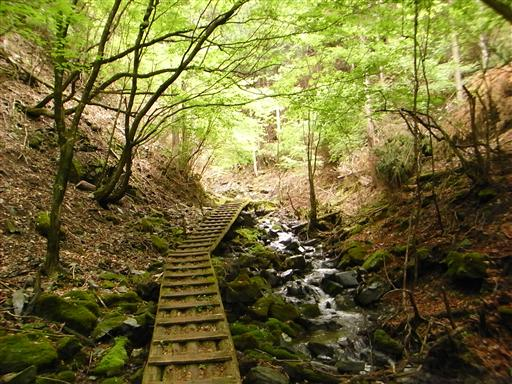
白石峠に到着。ここからは尾根道になる。
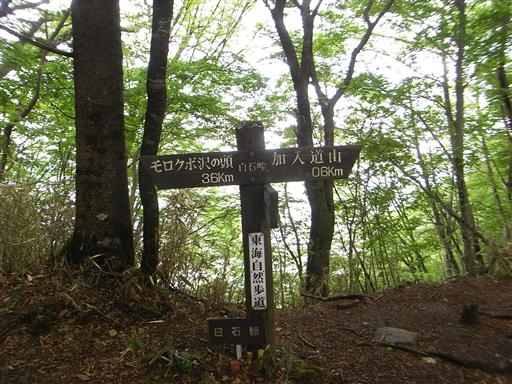
この辺りはブナの樹林に囲まれていて気持ちの良い場所だ。
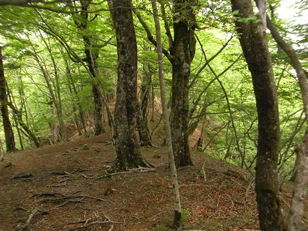
加入道山に到着する。展望は全くない。
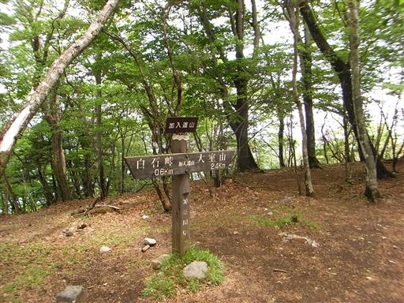
加入道避難小屋が山頂近くに建っている。
この辺りはアクセスがよく便利な山域だが、避難小屋は多い。

大室山へ続く稜線は美しい樹林帯が続いている。
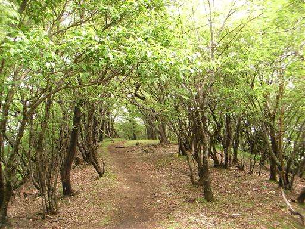
僅かだがツツジの花が咲いている。
この時期はシロヤシオが咲く時期だが、ここでは全く見られない。
檜洞丸では咲くはずなので、ほとんどの登山者はそちらに行ってるのかもしれない。
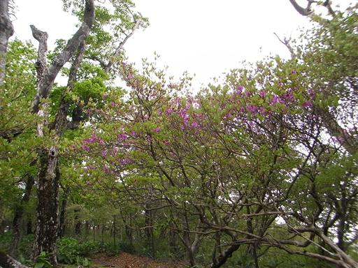
足元にバイケイソウの群落が現れる。これほど大規模な群落は初めて見た。
花期はもう少し後だが、大して目立つ花は付けない。
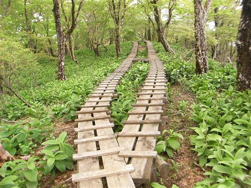
11:59 大室山山頂到着。標高1588m。
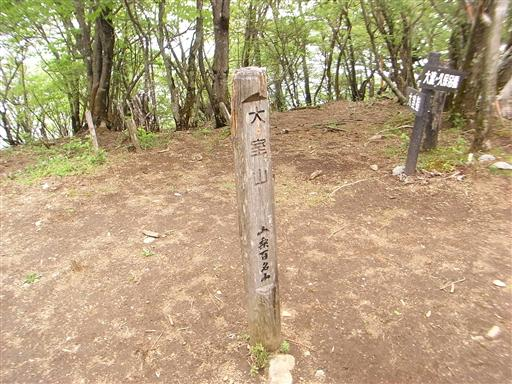
この山頂も全く展望はない。緑に包まれた静かな山頂でのんびり休憩。
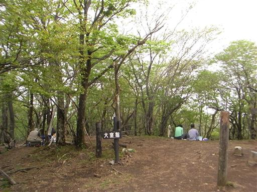
大室山からの下山中に一角が開け、ようやく展望が開ける。
朝はバスから富士山も見えていたが、だいぶ雲が出てきている。
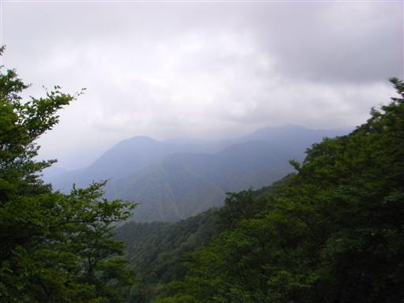
犬越路に到着。1ヶ月前に来たばかりのところだ。
避難小屋を覗いてみると、非常にきれいで快適そうだ。
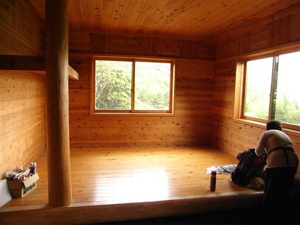
今日は檜洞丸方面もすっきりとは見渡せない。
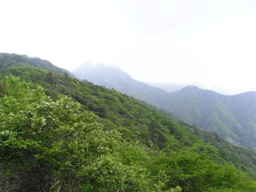
犬越路からは1ヶ月前に歩いた道と同じ道だ。
沢沿いの道を延々と下っていき、15時に西丹沢自然教室バス停に下山する。
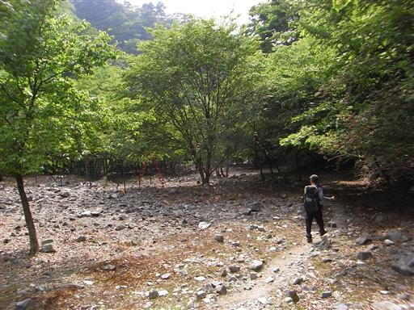